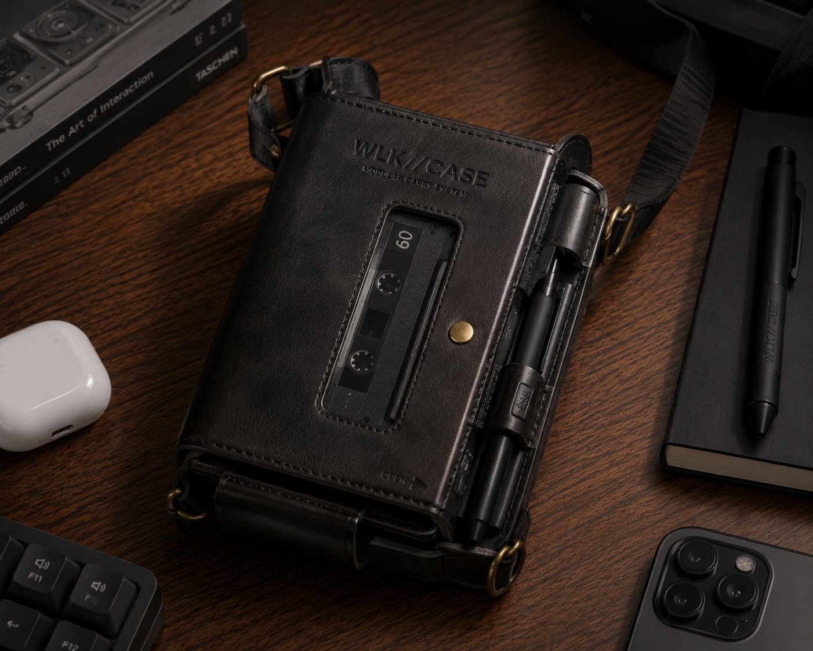
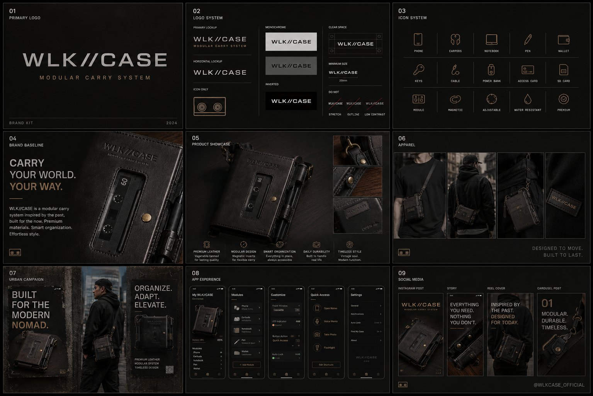

A wearable everyday-carry system inspired by the Sony Walkman — but built for modern tools. Phone, AirPods, notebook, cards: each lives in a magnetic insert that snaps into a leather harness. Functional object, fashion-grade material.
Choose your harness — chest, shoulder, hip. Buckle the brass clasp; the leather softens to your shape.
Snap each insert into place. Phone, AirPods, notebook, cards — each on its own magnet plate.
Walk out. The system is rebuildable in under 30 seconds for any errand, any outfit.
Phone, AirPods, notebook, card sleeve. Snap in what today needs and leave the rest at home.
Italian veg-tan, hand-edged. Ages, doesn't wear out — patinas with use into something better.
Strong-pull magnets engage with a click. No fumbling with snaps; secure enough for a run.
Brass darkens, leather softens. The product gets more yours every month it's on you.
Shoulder strap, chest harness, hip clip. Same insert system across all carry configurations.
Custom monogram, edge colour, hardware finish. A carry system you can name yours.

Walk//Case launches as a lifestyle Kickstarter — strong photography, clear story, made in Europe. Early backers receive a numbered harness plus three inserts; later tiers add custom monogram and additional insert kits.